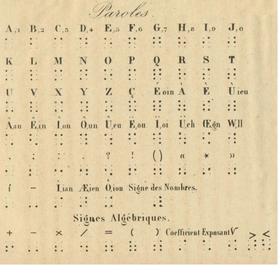

Braille is a notational system developed for people with blindness, deafblindness, and low vision. Notational systems represent the sounds or words of a language. In the case of Braille, the notational system is interpreted by the user tactilely instead of visually. While, Frenchman Louis Braille is credited with the development in the early 1800s, Braille was not the first touch-based reading system.
In the late 1900s, Frenchman Valentine Hauy embossed the roman letters in common texts. However, the reliance on typographic composition made the system challenging to learn and resulted in very low literacy among people with low vision. The system which led to the development of Braille was developed by artillery captain Charles Barbier de la Serre in 1822. The code that Barbier developed was known as night writing and developed as a military technology to give soliders the ability to be able to communicate silently and without a light source at night. Barbier's system was phonetic, relied on a 12-dot pattern which did not easily fit under a finger tip pad.
Since Louis Braille's redesign, the language not changed drastically. Since the 1950s there have been efforts to standardize the language by UNESCO. In 2005, the released a statement saying the Braille system is a "vital language of communication, as legitimate as all other languages in the world."
STEP 0
STEP 1
STEP 2
STEP 3
STEP 4
Scrollytelling is all the rage these days. Though it seems fancy, under the hood it uses many of the basic Javascript patterns you already know from D3! To fully understand it, we also need to work a bit of CSS magic...
Scrollytelling is all the rage these days. Though it seems fancy, under the hood it uses many of the basic Javascript patterns you already know from D3! To fully understand it, we also need to work a bit of CSS magic...
Scrollytelling is all the rage these days. Though it seems fancy, under the hood it uses many of the basic Javascript patterns you already know from D3! To fully understand it, we also need to work a bit of CSS magic...